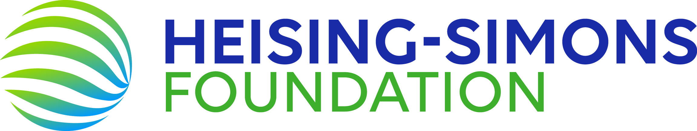
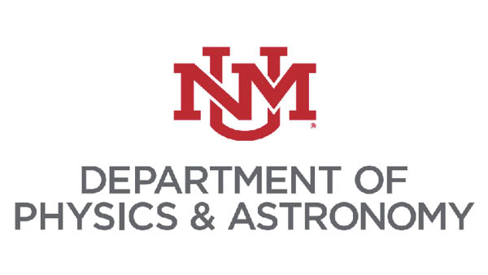

Particle Cosmology
in the Southwest 2025
September 18-20, 2025
University of New Mexico, Albuquerque, NM
University of New Mexico, Albuquerque, NM
| Home | Registration | Program | Venue | Travel |
The PCS 2025 workshop, hosted by the University of New Mexico,
aims to bring together particle physicists and cosmologists from
the 4-Corners area to discuss the latest advances from the
interface between particle physics and cosmology. This workshop is
made possible by the generous support of the Heising-Simons Foundation,
the UNM Center for Fundamental
Physics, and the UNM
Department of Physics and Astronomy. The workshop will
feature key plenary talks followed by focused presentations by
early-career scientists and other attendees. We strongly encourage
graduates students and postdocs from the 4-Corners area to attend.
The workshop will start Thursday September 18, 2025 in the morning
and conclude just before lunchtime on Saturday September 20, 2025.
The scientific program of the workshop can be found under the
"Program" tab above. There will be a reception following the
workshop on Thursday night, and the conference dinner will take
place at the Church
Street Cafe in Old Town Albuquerque on Friday night.
Coffee breaks and lunches (Thursday & Friday) are included for
workshop participants, and will be served near the location of the
talks. For out-of-town participants, breakfast is included with
your hotel stay.

For inquiries about this workshop, please email pcs2025unm@gmail.com.
|  |  |